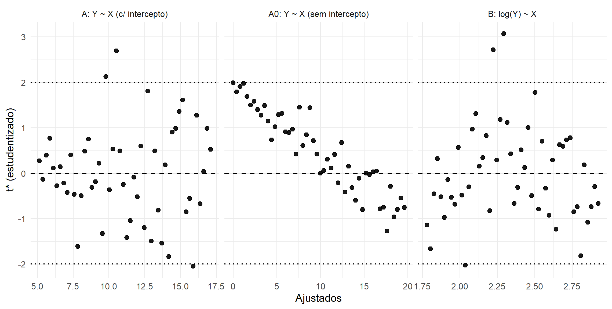
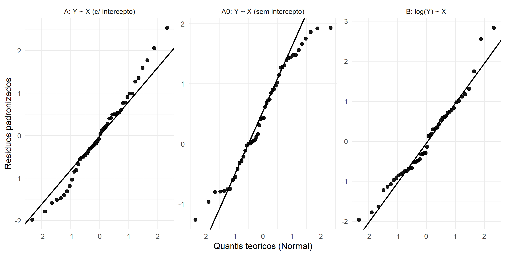
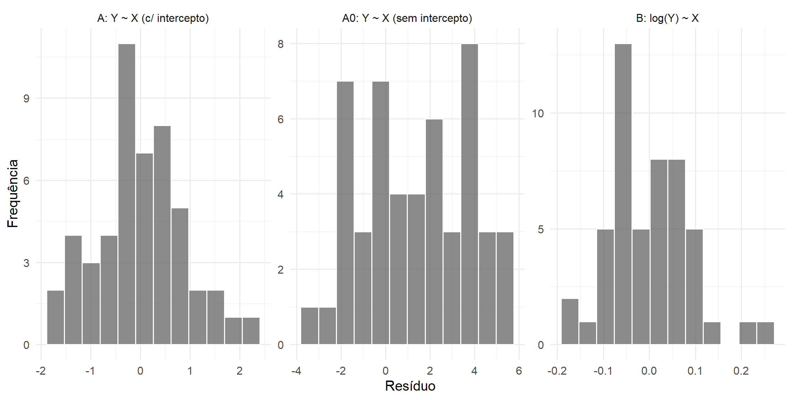
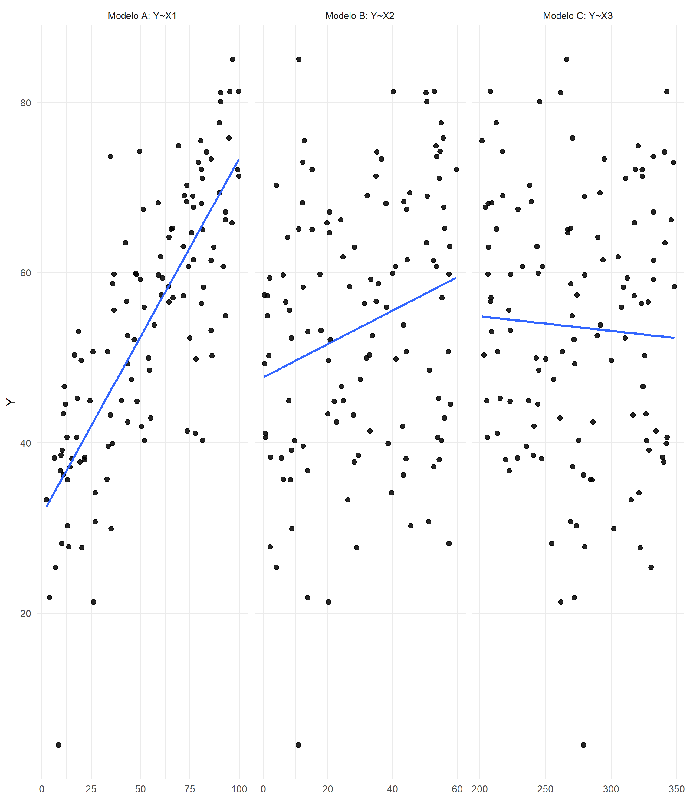
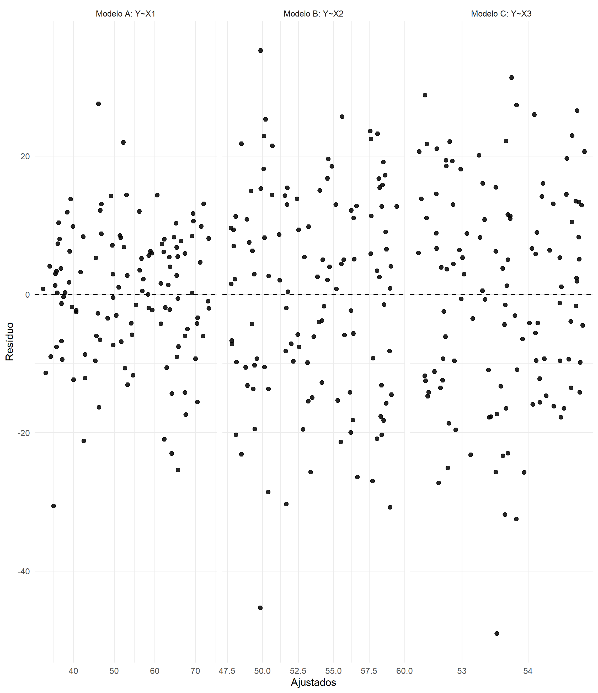
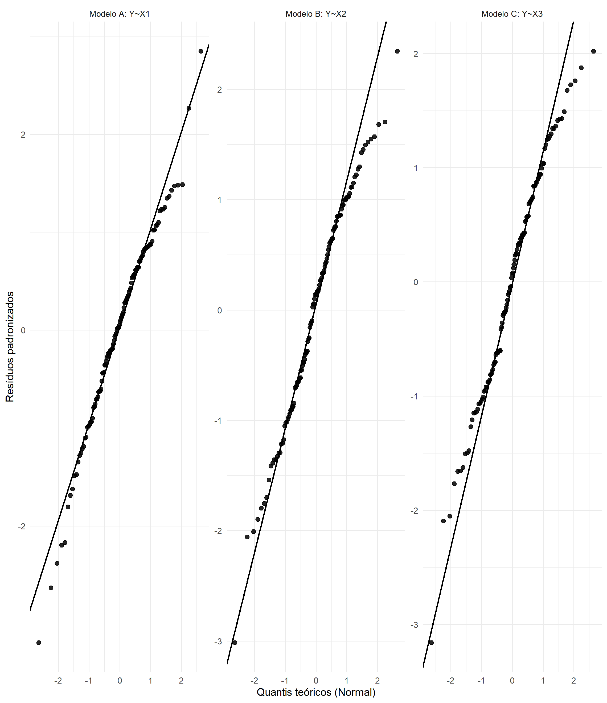
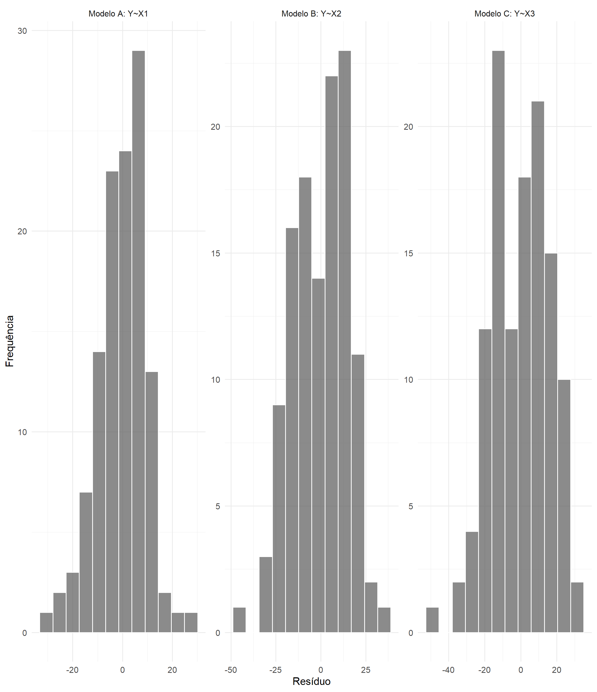

library(dplyr)
set.seed(2025)
# Simulação: consumo (Y) vs tempo de funcionamento (X)
n <- 50
X <- seq(0, 10, length.out = n)
# Consumo com intercepto > 0 (stand-by) e heterocedasticidade moderada
mu <- 5 + 1.2*X
sigma <- 0.6 + 0.05*X
Y <- mu + rnorm(n, 0, sigma)
Y <- pmax(Y, 0.1) # garantir Y>0 (para log)
df1 <- tibble(X = X, Y = Y)10 Comparação de Modelos
10.1 Motivação e princípios de comparação
Após discutir a análise de resíduos, surge uma questão natural: como escolher entre diferentes modelos candidatos? Nem sempre um único modelo é suficiente; muitas vezes ajustamos várias alternativas e precisamos compará-las.
A comparação de modelos, porém, não é um “campeonato de métricas”. Ela deve ser entendida como uma decisão estatística guiada por três ideias centrais: adequação, parcimônia e finalidade (explicar vs prever). Em particular, comparar modelos significa avaliar trocas (trade-offs): um modelo pode ajustar melhor os dados, mas à custa de maior complexidade e menor estabilidade, especialmente em amostras moderadas/pequenas.
A comparação de modelos envolve duas dimensões principais:
- Qualidade estatística do ajuste – medida por critérios formais (ex.: \(R^2\), teste \(F\), AIC, BIC).
- Pertinência substantiva – se o modelo faz sentido em relação ao fenômeno estudado, é parcimonioso e interpretável.
Em regressão, “modelo melhor” não significa “modelo com o maior ajuste numérico”. O ponto é: um modelo é um compromisso entre (i) representar a estrutura sistemática de \(Y\) explicada por \(X\) e (ii) não incorporar estrutura espúria (ruído) como se fosse sinal. Critérios como AIC e BIC foram propostos justamente para explicitar essa troca: melhorar o ajuste (via log-verossimilhança) custa complexidade (número de parâmetros), e essa penalização é uma maneira de desencorajar sobreajuste (Akaike, 1974; Burnham; Anderson, 2002; Schwarz, 1978).
Um ponto central é que não adianta comparar dois modelos se ambos têm resíduos inadequados. O primeiro filtro deve ser sempre o diagnóstico dos resíduos. Uma vez que os modelos estejam pelo menos aproximadamente bem especificados, podemos partir para critérios comparativos.
Essa ordem (“diagnóstico \(\rightarrow\) comparação”) é importante porque muitos critérios formais assumem que o modelo está minimamente compatível com as hipóteses estruturais do MRLS (por exemplo: relação média aproximadamente linear na escala adotada, variância aproximadamente constante e ausência de padrões sistemáticos evidentes nos resíduos). Se essas condições falham, é comum observar situações enganosas como:
- um modelo com \(R^2\) alto, mas com padrão em funil (heteroscedasticidade), o que compromete inferência usual e previsões com incerteza mal calibrada;
- um modelo com ligeira melhora em AIC/BIC após adicionar termos, mas com curvatura residual persistente, sinalizando que a forma funcional ainda está incorreta;
- um modelo “mais complexo” que parece melhor no ajuste dentro da amostra, mas piora a capacidade de generalização (sobreajuste).
10.1.1 Finalidade da comparação: explicar ou prever
Antes de escolher um critério, é útil explicitar o objetivo:
- Explicação/interpretação: prioriza parâmetros estáveis e interpretáveis e tende a valorizar parcimônia (frequentemente BIC é usado como referência em seleção mais “conservadora”).
- Predição: prioriza desempenho fora da amostra; critérios baseados em verossimilhança com penalização moderada (como AIC) são frequentemente usados como aproximações de desempenho preditivo, mas idealmente devem ser complementados por validação (ex.: validação cruzada) quando isso fizer parte do desenho analítico (Burnham; Anderson, 2002).
Nesta seção, organizamos os principais critérios formais e práticos de comparação, seguidos de exemplos ilustrativos.
10.2 Critérios clássicos de comparação
10.2.1 Coeficiente de determinação \(R^2\)
O \(R^2\) mede a proporção da variabilidade de \(Y\) explicada pelo modelo:
\[ R^2 = 1 - \frac{SQ_{Res}}{SQ_{Tot}}, \]
em que \(SQ_{Res} = \sum_{i=1}^n (Y_i-\hat Y_i)^2\) é a soma de quadrados dos resíduos e \(SQ_{Tot} = \sum_{i=1}^n (Y_i-\bar Y)^2\) é a soma de quadrados total.
O \(R^2\) responde à pergunta: “quanto da variabilidade total observada em \(Y\) foi capturada pelo componente sistemático do modelo?”. Ele é, portanto, uma medida descritiva de ajuste: compara o erro do modelo com o erro de um “modelo nulo” que sempre prediz \(\bar Y\).
Como a decomposição \[ SQ_{Tot}=SQ_{Reg}+SQ_{Res} \] vale no MRLS com intercepto, também podemos escrever \[ R^2=\frac{SQ_{Reg}}{SQ_{Tot}}, \] isto é, a fração da variabilidade total explicada pela regressão.
10.2.1.1 Propriedades e limitações
É tentador ler \(R^2\) como “o modelo é bom/ruim”, mas isso é perigoso por três razões:
- \(R^2\) não diagnostica adequação das hipóteses: um modelo pode ter \(R^2\) alto e ainda assim apresentar resíduos com curvatura, heteroscedasticidade ou dependência. Por isso, o diagnóstico de resíduos vem antes.
- \(R^2\) não mede capacidade preditiva fora da amostra: ele é calculado na amostra usada no ajuste.
- \(R^2\) depende da variabilidade de \(Y\): em bases com pouca variação em \(Y\), mesmo modelos úteis podem ter \(R^2\) modestos; e em bases com grande variação em \(Y\), \(R^2\) pode ser alto sem que o modelo seja substantivamente satisfatório.
Vantagens e limitaçoes
- Vantagem: fornece uma medida intuitiva de ajuste.
- Limitação 1 (monotonicidade): em modelos de MQO com intercepto, \(R^2\) nunca diminui quando adicionamos regressores ao conjunto de candidatos. Isso ocorre porque, ao adicionar parâmetros, o MQO minimiza \(SQ_{Res}\) em um espaço maior, logo \(SQ_{Res}\) só pode diminuir (ou permanecer igual).
- Limitação 2 (comparabilidade): \(R^2\) não é comparável entre modelos com e sem intercepto, pois a decomposição de somas de quadrados muda. Em particular, quando o intercepto é omitido, o “modelo nulo” implícito deixa de ser \(Y=\bar Y\), e interpretações usuais de \(R^2\) podem se tornar enganosas.
- Limitação 3 (escala da resposta): se você transforma \(Y\) (por exemplo, \(\log(Y)\)), o \(R^2\) passa a descrever ajuste na escala transformada, não na escala original.
Observação: no MRLS (com intercepto), vale a relação \(R^2=r_{XY}^2\), conectando a medida de ajuste com a intensidade de associação linear entre \(X\) e \(Y\).
10.2.2 Coeficiente de determinação ajustado \(R^2_{aj}\)
Para penalizar modelos excessivamente complexos, define-se:
\[ R^2_{aj} = 1 - \frac{SQ_{Res}/(n-p)}{SQ_{Tot}/(n-1)}, \]
em que \(n\) é o tamanho da amostra e \(p\) é o número de parâmetros (incluindo o intercepto).
O \(R^2_{aj}\) substitui “proporção de variância explicada” por uma comparação entre variâncias estimadas:
- \(SQ_{Res}/(n-p)\) é o estimador de \(\sigma^2\) (variância do erro) sob o modelo candidato;
- \(SQ_{Tot}/(n-1)\) é a variância amostral de \(Y\).
Assim, \(R^2_{aj}\) pergunta: “o quanto a variância residual estimada caiu em relação à variância total de \(Y\), levando em conta quantos parâmetros eu usei para isso?”.
Ao contrário do \(R^2\), o \(R^2_{aj}\) pode diminuir quando adicionamos regressoras. Isso é desejável: se um novo termo reduz pouco o \(SQ_{Res}\), a penalização por perder graus de liberdade pode dominar, sinalizando que o ganho de ajuste não compensa a complexidade.
10.2.2.1 Vantagens e limitações
- Vantagem: permite comparar modelos com diferentes números de parâmetros, desde que estejam na mesma escala da resposta e com intercepto.
- Limitação: em amostras pequenas, ainda pode favorecer modelos com leve sobreajuste, pois sua penalização é relativamente moderada.
- Uso prático: quando a comparação envolve modelos com diferentes estruturas, \(R^2_{aj}\) é preferível ao \(R^2\) simples.
10.2.3 Teste \(F\) para modelos aninhados
Quando um modelo é caso particular de outro (modelo restrito vs. modelo completo), podemos usar:
\[ F = \frac{(SQ_{Res,\,restrito} - SQ_{Res,\,completo})/q}{SQ_{Res,\,completo}/(n-p)}, \]
em que:
- \(q\) é o número de restrições impostas (equivalentemente, o número de parâmetros “removidos” quando passamos do completo para o restrito);
- \(p\) é o número de parâmetros no modelo completo (incluindo intercepto).
O teste \(F\) para modelos aninhados avalia se a redução em \(SQ_{Res}\) ao passarmos do modelo restrito para o completo é grande o suficiente para justificar os parâmetros adicionais.
- No numerador está o “ganho médio” de ajuste por restrição relaxada: \((SQ_{Res,restrito}-SQ_{Res,completo})/q\).
- No denominador está uma estimativa de \(\sigma^2\) no modelo completo: \(SQ_{Res,completo}/(n-p)\).
Se o ganho médio (numerador) é grande comparado ao ruído residual esperado (denominador), a estatística \(F\) fica grande e rejeitamos o modelo restrito.
10.2.3.1 Hipóteses e decisão
- Hipóteses:
- \(H_0\): as restrições são válidas (o modelo mais simples é suficiente).
- \(H_1\): pelo menos uma restrição é falsa (o modelo completo melhora o ajuste de forma relevante).
- \(H_0\): as restrições são válidas (o modelo mais simples é suficiente).
- Regra: rejeitar \(H_0\) para valores grandes de \(F\) (ou valor-p pequeno).
- Uso: útil para verificar se a inclusão de um termo (ou intercepto) melhora de forma estatisticamente significativa o ajuste.
- Limitação: só se aplica a modelos aninhados (isto é, quando o modelo restrito pode ser obtido impondo restrições lineares nos parâmetros do modelo completo).
Adicionalmente, mesmo quando o teste \(F\) rejeita \(H_0\), ainda é necessário verificar:
- se o termo adicional tem interpretação substantiva coerente;
- se a inclusão introduz instabilidade (por exemplo, poucos dados sustentando um termo);
- se o ganho é relevante na prática (e não apenas detectável por tamanho amostral).
10.3 Critérios de informação
Além dos critérios clássicos, que se baseiam em soma de quadrados e variâncias, temos medidas que incorporam explicitamente a ideia de verossimilhança e parcimônia. Esses critérios nascem de uma perspectiva mais geral de modelagem estatística, na qual o modelo é visto como uma aproximação para a distribuição geradora dos dados.
No contexto do MRLS com erros normais,
\[ Y_i = \beta_0 + \beta_1 X_i + \varepsilon_i, \quad \varepsilon_i \sim \mathcal{N}(0,\sigma^2), \]
a estimação por MQO coincide com a estimação por máxima verossimilhança. Assim, podemos usar a log-verossimilhança avaliada nos estimadores para comparar modelos.
10.3.1 Critério de Informação de Akaike (AIC)
\[ AIC = -2\ell(\hat\theta) + 2p, \]
em que:
- \(\ell(\hat\theta)\) é a log-verossimilhança no ponto estimado;
- \(p\) é o número de parâmetros estimados (incluindo \(\sigma^2\), quando apropriado).
O AIC pode ser interpretado como uma aproximação para a distância de Kullback–Leibler entre o modelo candidato e o verdadeiro mecanismo gerador dos dados (Akaike (1974); Burnham; Anderson (2002)). Ele busca selecionar o modelo que, entre os candidatos, minimiza a perda de informação esperada.
A estrutura do critério explicita o compromisso:
- \(-2\ell(\hat\theta)\) recompensa melhor ajuste (maior verossimilhança);
- \(2p\) penaliza complexidade.
Assim, modelos com mais parâmetros precisam “ganhar” log-verossimilhança suficiente para compensar a penalização.
Interpretação prática
- Regra: entre modelos comparáveis, preferir o de menor AIC.
- O AIC não tem interpretação absoluta; só faz sentido comparativamente.
- Diferenças pequenas (por exemplo, menores que 2 unidades) geralmente indicam que os modelos têm suporte semelhante nos dados (Burnham; Anderson (2002)).
O AIC não testa hipóteses do tipo \(H_0\) vs. \(H_1\). Ele não produz valor-p nem decisão “rejeita/não rejeita”. É um critério de seleção por informação, não um teste clássico de significância.
Além disso, o AIC tende a favorecer modelos levemente mais complexos, especialmente em amostras pequenas. Em contextos de amostras reduzidas, versões corrigidas (como AICc) podem ser mais adequadas (ver Burnham; Anderson (2002)).
10.3.2 Critério Bayesiano de Schwarz (BIC)
\[ BIC = -2\ell(\hat\theta) + p \log(n). \]
O BIC possui forma semelhante ao AIC, mas a penalização cresce com \(\log(n)\). Assim:
- Para amostras grandes, \(\log(n)\) pode ser bem maior que 2;
- A penalização por parâmetro torna-se mais severa à medida que \(n\) aumenta.
O BIC pode ser interpretado como uma aproximação ao log do fator de Bayes sob certas condições assintóticas (Schwarz (1978)). Por isso, ele é frequentemente associado a uma perspectiva de seleção do modelo “verdadeiro” dentro do conjunto candidato.
Interpretação prática
- Regra: entre modelos comparáveis, preferir o de menor BIC.
- O BIC tende a ser mais conservador que o AIC.
- Em amostras grandes, pode penalizar fortemente modelos com muitos parâmetros.
10.3.3 Boas práticas e comparabilidade entre escalas
AIC vs. BIC: qual usar?
- AIC: mais orientado à predição e desempenho fora da amostra.
- BIC: mais orientado à identificação de uma estrutura “mais plausível” dentro do conjunto de candidatos.
- Compare apenas modelos ajustados na mesma escala da variável resposta.
A escolha depende do objetivo da análise. Em contextos aplicados, é comum reportar ambos e discutir a coerência entre eles.
Nota importante sobre AIC e BIC:
Embora possamos calcular AIC e BIC para qualquer modelo ajustado, não é correto comparar diretamente os valores de um modelo ajustado em \(Y\) com outro ajustado em \(\log(Y)\), por exemplo.Isso acontece porque a transformação da resposta altera a escala e a própria função de verossimilhança usada no cálculo dos critérios. Assim, os valores de AIC/BIC ficam em “bases diferentes”.
Como proceder então?
- Compare AIC/BIC apenas entre modelos ajustados na mesma escala da resposta.
- Use análise de resíduos e diagnóstico gráfico para avaliar se a transformação foi benéfica.
- Para fins de predição, utilize métricas de erro calculadas na escala original de \(Y\) (ex.: RMSE, MAE) para decidir qual modelo é mais adequado.Em síntese: AIC e BIC são ferramentas valiosas, mas devem ser usados com critério. Transformações em \(Y\) exigem avaliação adicional baseada em resíduos e desempenho preditivo.
10.3.4 Estratégia prática de comparação
Ao comparar modelos alternativos:
- Primeiro passo: verifique os resíduos (condição mínima).
- Se um modelo viola homocedasticidade ou apresenta estrutura sistemática, mesmo que tenha \(R^2\) alto, não deve ser preferido.
- Segundo passo: use os critérios formais.
- Teste \(F\) quando os modelos são aninhados.
- \(R^2_{aj}\) quando a comparação é dentro da mesma escala.
- AIC/BIC para comparações amplas (mesma resposta, diferentes ajustes).
- Teste \(F\) quando os modelos são aninhados.
- Terceiro passo: considere a interpretação substantiva.
- Um modelo matematicamente melhor pode ser substantivamente inadequado.
10.4 Exemplos ilustrativos de comparação de modelos
Para consolidar as ideias, apresentamos dois exemplos didáticos que demonstram como comparar modelos no contexto do MRLS. Cada exemplo explora um tipo de decisão prática enfrentada por analistas de dados.
10.4.1 Exemplo 1 — Intercepto e transformação na resposta
Simulação do Exemplo 1: gerar df1 com as variáveis X e Y (com \(Y>0\), para permitir \(\log(Y)\)).
- Cenário e modelos candidatos: consumo de energia (\(Y\)) em função do tempo de funcionamento (\(X\)), com \(n=50\) observações.
Modelos candidatos:
Com intercepto
\[ Y = \beta_0 + \beta_1 X + \varepsilon \] Representa consumo mínimo (stand-by). Esperado em contextos onde \(Y>0\) mesmo quando \(X=0\).Sem intercepto
\[ Y = \beta_1 X + \varepsilon \] Força a reta a passar pela origem. Só faz sentido se sabemos que \(Y=0\) quando \(X=0\).Transformado (log da resposta)
\[ \log Y = \beta_0 + \beta_1 X + \varepsilon \]
Nesta configuração com variável transformada, o coeficiente \(\beta_1\) indica a mudança aditiva em \(\log(Y)\) a cada unidade adicional em \(X\). Na escala original de \(Y\), isso equivale a dizer que um aumento de 1 unidade em \(X\) está associado a uma multiplicação esperada de \(Y\) por \(\exp(\beta_1)\).
Aqui estamos comparando três “ideias de modelo” que, apesar de parecidas na forma, respondem a perguntas ligeiramente diferentes:
- Modelo A (com intercepto) permite que exista um nível médio de consumo quando \(X=0\) (consumo residual/stand-by).
- Modelo A0 (sem intercepto) declara, como hipótese estrutural, que “se \(X=0\), então \(Y=0\)”. Essa é uma afirmação forte: se ela for falsa, o ajuste pode “compensar” deslocando a inclinação e gerando resíduos estruturados.
- Modelo B (com \(\log Y\)) muda a escala da resposta e, portanto, muda o tipo de erro “natural” no modelo (efeitos multiplicativos no \(Y\) original tendem a virar efeitos aditivos em \(\log(Y)\)).
Visualização da primeiras linhas da Base de dados
head(df1)# A tibble: 6 × 2
X Y
<dbl> <dbl>
1 0 5.37
2 0.204 5.27
3 0.408 5.97
4 0.612 6.54
5 0.816 6.22
6 1.02 6.12- Estimação e resumos dos modelos
Ajustes e tabela de coeficientes: ajustar mod_A, mod_A0 e mod_log.
# Ajustes
mod_A <- lm(Y ~ X, data = df1) # com intercepto
mod_A0 <- lm(Y ~ 0 + X, data = df1) # sem intercepto
mod_log <- lm(log(Y) ~ X, data = df1) # resposta em log
cat("Modelo com intercepto (A):\n")Modelo com intercepto (A):print(coef(summary(mod_A))) Estimate Std. Error t value Pr(>|t|)
(Intercept) 5.137603 0.24760614 20.74909 1.297563e-25
X 1.196581 0.04266949 28.04301 2.032694e-31cat("\nModelo sem intercepto (A0):\n")
Modelo sem intercepto (A0):print(coef(summary(mod_A0))) Estimate Std. Error t value Pr(>|t|)
X 1.959437 0.06767437 28.9539 1.770922e-32cat("\nModelo com log(Y) (B):\n")
Modelo com log(Y) (B):print(coef(summary(mod_log))) Estimate Std. Error t value Pr(>|t|)
(Intercept) 1.7791870 0.025029186 71.08450 2.673492e-50
X 0.1143677 0.004313232 26.51554 2.548074e-30Comentários:
- O Modelo A (com intercepto) mostra um termo constante significativo, representando consumo em stand-by (\(Y>0\) em \(x \approx 0\)).
- O Modelo A0 (sem intercepto) ignora o consumo em stand-by e força a reta a passar pela origem.
- O Modelo B (log da resposta) reduz heteroscedasticidade: os coeficientes mantêm significância e a interpretação passa a ser na escala da variável transformada.
Teste de resíduos (omnibus, Jarque-Bera, skew, kurtosis, Durbin-Watson, etc.)
# Testes/medidas adicionais dos resíduos
library(lmtest) # dwtest
library(tseries) # jarque.bera.test
library(moments) # skewness, kurtosis
res_tests <- function(mod, nome){
e <- resid(mod)
jb <- jarque.bera.test(e)
sk <- skewness(e)
ku <- kurtosis(e) # kurtosis "crua" (Normal ~ 3)
# Durbin-Watson (lmtest)
dw <- dwtest(mod)
# Omnibus D'Agostino-Pearson (quando disponível via fBasics::dagoTest)
omni_out <- NULL
if (requireNamespace("fBasics", quietly = TRUE)) {
omni_out <- fBasics::dagoTest(e)
}
cat("\n==============================\n")
cat("Testes dos resíduos —", nome, "\n")
cat("==============================\n")
cat("Jarque-Bera:\n")
print(jb)
cat("\nAssimetria (skewness): ", round(sk, 4), "\n", sep = "")
cat("Curtose (kurtosis): ", round(ku, 4), " (Normal ~ 3)\n", sep = "")
cat("\nDurbin-Watson (lmtest::dwtest):\n")
print(dw)
if (!is.null(omni_out)) {
cat("\nOmnibus (D'Agostino-Pearson) — fBasics::dagoTest:\n")
print(omni_out)
} else {
cat("\nOmnibus (D'Agostino-Pearson):\n")
cat("Pacote 'fBasics' não disponível no ambiente. (Opcional: instalar para executar o omnibus.)\n")
}
}
res_tests(mod_A, "Modelo A (Y ~ X, com intercepto)")
==============================
Testes dos resíduos — Modelo A (Y ~ X, com intercepto)
==============================
Jarque-Bera:
Jarque Bera Test
data: e
X-squared = 0.39891, df = 2, p-value = 0.8192
Assimetria (skewness): 0.1998
Curtose (kurtosis): 2.8216 (Normal ~ 3)
Durbin-Watson (lmtest::dwtest):
Durbin-Watson test
data: mod
DW = 2.165, p-value = 0.6695
alternative hypothesis: true autocorrelation is greater than 0
Omnibus (D'Agostino-Pearson) — fBasics::dagoTest:
Title:
D'Agostino Normality Test
Test Results:
STATISTIC:
Chi2 | Omnibus: 0.4194
Z3 | Skewness: 0.6388
Z4 | Kurtosis: 0.1065
P VALUE:
Omnibus Test: 0.8108
Skewness Test: 0.523
Kurtosis Test: 0.9152 res_tests(mod_A0, "Modelo A0 (Y ~ X, sem intercepto)")
==============================
Testes dos resíduos — Modelo A0 (Y ~ X, sem intercepto)
==============================
Jarque-Bera:
Jarque Bera Test
data: e
X-squared = 2.6548, df = 2, p-value = 0.2652
Assimetria (skewness): -0.0498
Curtose (kurtosis): 1.8755 (Normal ~ 3)
Durbin-Watson (lmtest::dwtest):
Durbin-Watson test
data: mod
DW = 0.22013, p-value < 2.2e-16
alternative hypothesis: true autocorrelation is greater than 0
Omnibus (D'Agostino-Pearson) — fBasics::dagoTest:
Title:
D'Agostino Normality Test
Test Results:
STATISTIC:
Chi2 | Omnibus: 8.7587
Z3 | Skewness: -0.1602
Z4 | Kurtosis: -2.9552
P VALUE:
Omnibus Test: 0.01253
Skewness Test: 0.8728
Kurtosis Test: 0.003125 res_tests(mod_log, "Modelo B (log(Y) ~ X)")
==============================
Testes dos resíduos — Modelo B (log(Y) ~ X)
==============================
Jarque-Bera:
Jarque Bera Test
data: e
X-squared = 3.1899, df = 2, p-value = 0.2029
Assimetria (skewness): 0.5779
Curtose (kurtosis): 3.4418 (Normal ~ 3)
Durbin-Watson (lmtest::dwtest):
Durbin-Watson test
data: mod
DW = 1.5831, p-value = 0.04934
alternative hypothesis: true autocorrelation is greater than 0
Omnibus (D'Agostino-Pearson) — fBasics::dagoTest:
Title:
D'Agostino Normality Test
Test Results:
STATISTIC:
Chi2 | Omnibus: 4.236
Z3 | Skewness: 1.7691
Z4 | Kurtosis: 1.0518
P VALUE:
Omnibus Test: 0.1203
Skewness Test: 0.07688
Kurtosis Test: 0.2929 Comentários:
- Modelo A (com intercepto):
- O teste Omnibus e o Jarque-Bera não são significativos (valores-p altos), sugerindo que os resíduos não violam fortemente a normalidade.
- O Durbin-Watson próximo de 2 indica ausência de autocorrelação serial.
- Conclusão: resíduos adequados, modelo consistente.
- O teste Omnibus e o Jarque-Bera não são significativos (valores-p altos), sugerindo que os resíduos não violam fortemente a normalidade.
- Modelo A0 (sem intercepto):
- O Durbin-Watson é muito baixo (≈ 0,2), indicando forte autocorrelação positiva dos resíduos.
- Embora Omnibus/Jarque-Bera não rejeitem a normalidade, a dependência serial torna o modelo problemático.
- Conclusão: estatisticamente inadequado, reforçando que a exclusão do intercepto distorce o ajuste.
- O Durbin-Watson é muito baixo (≈ 0,2), indicando forte autocorrelação positiva dos resíduos.
- Modelo B (log da resposta):
- Testes de normalidade (Omnibus, JB) continuam não significativos, mas a assimetria (Skew negativo) sugere leve desvio.
- O Durbin-Watson ≈ 1,4 aponta alguma autocorrelação positiva.
- Conclusão: apesar das pequenas imperfeições, o modelo log-transformado melhora a homocedasticidade em relação ao Modelo A.
- Testes de normalidade (Omnibus, JB) continuam não significativos, mas a assimetria (Skew negativo) sugere leve desvio.
Em dados simulados sem mecanismo temporal explícito, autocorrelação forte geralmente é um sinal de especificação inadequada (por exemplo, restrições erradas como \(\beta_0=0\) podem “organizar” os resíduos e induzir padrões). Em aplicações reais, autocorrelação também pode ocorrer por dependência temporal genuína; nesse caso, o MRLS pode precisar ser estendido (tema para capítulos posteriores).
- Modelos aninhados: teste F (A0 vs A)
# Teste F (modelos aninhados): A0 (restrito) vs A (com intercepto)
cat("ANOVA (Teste F: A0 vs A):\n")ANOVA (Teste F: A0 vs A):print(anova(mod_A0, mod_A))Analysis of Variance Table
Model 1: Y ~ 0 + X
Model 2: Y ~ X
Res.Df RSS Df Sum of Sq F Pr(>F)
1 49 377.84
2 48 37.90 1 339.94 430.52 < 2.2e-16 ***
---
Signif. codes: 0 '***' 0.001 '**' 0.01 '*' 0.05 '.' 0.1 ' ' 1O modelo sem intercepto (A0) é um caso particular do modelo com intercepto (A), obtido ao impor a restrição \(\beta_0=0\). Logo, o teste \(F\) avalia se “forçar a origem” piora o ajuste além do esperado por acaso.
Comentários:
- O teste F compara os modelos A0 (restrito) e A (com intercepto).
- O resultado altamente significativo (valor-p próximo de zero) indica que o intercepto é necessário.
- Assim, rejeitamos o modelo sem intercepto e preferimos o modelo com intercepto.
- Comparação numérica (\(R^2\), \(R_{aj}^2\), AIC, BIC)
library(tidyverse)
cmp1 <- tibble(
Modelo = c("A: Y~X (c/ intercepto)", "A0: Y~X (sem intercepto)",
"B: log(Y)~X"),
R2 = c(summary(mod_A)$r.squared, summary(mod_A0)$r.squared,
summary(mod_log)$r.squared),
R2_aj = c(summary(mod_A)$adj.r.squared, summary(mod_A0)$adj.r.squared,
summary(mod_log)$adj.r.squared),
AIC = c(AIC(mod_A), AIC(mod_A0), AIC(mod_log)),
BIC = c(BIC(mod_A), BIC(mod_A0), BIC(mod_log))
)
cmp1# A tibble: 3 × 5
Modelo R2 R2_aj AIC BIC
<chr> <dbl> <dbl> <dbl> <dbl>
1 A: Y~X (c/ intercepto) 0.942 0.941 134. 140.
2 A0: Y~X (sem intercepto) 0.945 0.944 247. 251.
3 B: log(Y)~X 0.936 0.935 -95.1 -89.4Lembre-se que um \(R^2\) elevado pode coexistir com resíduos ruins. Isso acontece porque \(R^2\) mede “quanto o modelo explica” em termos de variabilidade total, mas não garante que as hipóteses do MRLS estejam razoavelmente satisfeitas. Em particular, um modelo pode ter alto \(R^2\) e ainda assim produzir inferências pouco confiáveis (erros-padrão distorcidos).
Comentários:
- O Modelo A0 apresenta \(R^2\) elevado, mas penalizações via AIC/BIC mostram que é muito inferior (valores bem maiores). Logo, acredita-se que os coeficientes ficaram distorcidos, superestimando a inclinação.
- O Modelo A combina bom ajuste (\(R^2_{aj}\) alto) e parcimônia.
- O Modelo B (log) apresenta os menores valores de AIC/BIC.
- Diagnóstico gráfico comparativo
Dispersões com retas ajustadas dos dois modelos restantes
suppressPackageStartupMessages({
library(ggplot2)
library(dplyr)
library(tidyr)
})
dfA <- df1 %>% mutate(valor = Y, modelo = "A: Y ~ X (c/ intercepto)")
dfA0 <- df1 %>% mutate(valor = Y, modelo = "A0: Y ~ X (sem intercepto)")
dfB <- df1 %>% mutate(valor = log(Y), modelo = "B: log(Y) ~ X")
df_plot <- bind_rows(dfA, dfA0, dfB)
ggplot(df_plot, aes(x = X, y = valor)) +
geom_point(alpha = 0.9, size = 2) +
geom_smooth(method = "lm", se = FALSE, linewidth = 1) +
facet_wrap(~modelo, ncol = 3, scales = "free_y") +
labs(x = "X", y = NULL) +
theme_minimal(base_size = 12)
Comentários:
- Em ambos os Modelos (A e B), não observa-se aumento relevante da variabilidade de \(Y\) conforme \(X\) cresce.
Resíduos vs. valores ajustados
library(ggplot2)
library(dplyr)
dados <- bind_rows(
tibble(fit = fitted(mod_A), res = resid(mod_A), modelo = "A: Y ~ X (c/ intercepto)"),
tibble(fit = fitted(mod_A0), res = resid(mod_A0), modelo = "A0: Y ~ X (sem intercepto)"),
tibble(fit = fitted(mod_log), res = resid(mod_log), modelo = "B: log(Y) ~ X")
)
ggplot(dados, aes(x = fit, y = res)) +
geom_point(alpha = 0.9, size = 2) +
geom_hline(yintercept = 0, linetype = "dashed", linewidth = 0.6) +
facet_wrap(~modelo, ncol = 3, scales = "free_x") +
labs(x = "Ajustados", y = "Resíduo") +
theme_minimal(base_size = 12)
Comentário:
Neste gráfico, buscamos uma nuvem aproximadamente aleatória em torno de 0. Três estruturas são especialmente informativas:
- Funil (dispersão aumentando/diminuindo com o nível ajustado): sinal de heteroscedasticidade.
- Curvatura (padrão em arco): sinal de forma funcional inadequada (não linearidade não capturada).
- Faixas (bandas horizontais): podem surgir por discretização/limitação de medida em \(Y\).
Na comparação entre modelos, o melhor candidato é o que reduz essas estruturas, sem criar novas.
Resíduos estudentizados vs. valores ajustados
library(ggplot2)
library(dplyr)
dados <- bind_rows(
tibble(fit = fitted(mod_A), stud = rstudent(mod_A), modelo = "A: Y ~ X (c/ intercepto)"),
tibble(fit = fitted(mod_A0), stud = rstudent(mod_A0), modelo = "A0: Y ~ X (sem intercepto)"),
tibble(fit = fitted(mod_log), stud = rstudent(mod_log), modelo = "B: log(Y) ~ X")
)
ggplot(dados, aes(x = fit, y = stud)) +
geom_point(alpha = 0.9, size = 2) +
geom_hline(yintercept = 0, linetype = "dashed", linewidth = 0.6) +
geom_hline(yintercept = c(-2, 2), linetype = "dotted", linewidth = 0.6) +
facet_wrap(~modelo, ncol = 3, scales = "free_x") +
labs(x = "Ajustados", y = "t* (estudentizado)") +
theme_minimal(base_size = 12)
Comentário:
Estes gráficos apresentam informações similares aos ilustradas nos gráficos anteriores
QQ-plot dos resíduos
library(ggplot2)
library(dplyr)
# dados do QQ-plot + parâmetros da reta ao estilo qqline (base R)
qq_df_line <- function(mod, modelo){
r <- rstandard(mod)
q <- qqnorm(r, plot.it = FALSE)
df <- tibble(theo = q$x, samp = q$y, modelo = modelo)
# mesma regra do qqline: reta baseada nos quartis (25% e 75%)
yq <- quantile(r, probs = c(0.25, 0.75), na.rm = TRUE)
xq <- qnorm(c(0.25, 0.75))
slope <- (yq[2] - yq[1])/(xq[2] - xq[1])
intercept <- yq[1] - slope*xq[1]
list(df = df, line = tibble(modelo = modelo, intercept = intercept, slope = slope))
}
outA <- qq_df_line(mod_A, "A: Y ~ X (c/ intercepto)")
outA0 <- qq_df_line(mod_A0, "A0: Y ~ X (sem intercepto)")
outB <- qq_df_line(mod_log, "B: log(Y) ~ X")
dados <- bind_rows(outA$df, outA0$df, outB$df)
linhas <- bind_rows(outA$line, outA0$line, outB$line)
ggplot(dados, aes(x = theo, y = samp)) +
geom_point(alpha = 0.9, size = 2) +
geom_abline(data = linhas, aes(intercept = intercept, slope = slope),
linewidth = 0.8) +
facet_wrap(~modelo, ncol = 3, scales = "free") +
labs(x = "Quantis teoricos (Normal)",
y = "Residuos padronizados") +
theme_minimal(base_size = 12)
Comentário:
O QQ-plot avalia normalidade aproximada por meio do alinhamento entre os quantis amostrais dos resíduos e os quantis teóricos da Normal. A interpretação deve ser feita por padrões:
- Alinhamento global próximo da reta: evidência visual a favor de resíduos aproximadamente normais (pelo menos no “miolo” da distribuição).
- Desvios sistemáticos nas caudas (pontos afastando-se da reta apenas no início e no fim): indicam caudas mais pesadas ou mais leves que a Normal; isso costuma afetar sobretudo inferência em amostras pequenas.
- Padrão em “S”: sugere assimetria (skewness diferente de 0).
- Um ou poucos pontos muito afastados: podem ser indício de outliers (verificar também resíduos estudentizados e Cook).
Ao comparar modelos, prefira o que apresenta menos estrutura sistemática no QQ-plot, especialmente quando isso é coerente com as medidas numéricas de assimetria/curtose e com testes como Jarque–Bera.
Histograma dos resíduos
library(ggplot2)
library(dplyr)
dados <- bind_rows(
tibble(r = resid(mod_A), modelo = "A: Y ~ X (c/ intercepto)"),
tibble(r = resid(mod_A0), modelo = "A0: Y ~ X (sem intercepto)"),
tibble(r = resid(mod_log), modelo = "B: log(Y) ~ X")
)
ggplot(dados, aes(x = r)) +
geom_histogram(bins = 12, alpha = 0.7, color = "white") +
facet_wrap(~modelo, ncol = 3, scales = "free") +
labs(x = "Resíduo", y = "Frequência") +
theme_minimal(base_size = 12)
Comentário:
O histograma é um diagnóstico auxiliar: ele ajuda a visualizar assimetria e caudas. Em geral:
- histograma muito assimétrico sugere assimetria nos resíduos;
- caudas longas ou “ombros” podem sugerir caudas pesadas e/ou outliers.
A interpretação deve ser combinada com QQ-plot e com medidas como assimetria/curtose.
Resíduos vs. X
suppressPackageStartupMessages({
library(ggplot2)
library(dplyr)
})
dados <- bind_rows(
tibble(X = df1$X, res = resid(mod_A), modelo = "A: Y ~ X (c/ intercepto)"),
tibble(X = df1$X, res = resid(mod_A0), modelo = "A0: Y ~ X (sem intercepto)"),
tibble(X = df1$X, res = resid(mod_log), modelo = "B: log(Y) ~ X")
)
ggplot(dados, aes(x = X, y = res)) +
geom_point(alpha = 0.9, size = 2) +
geom_hline(yintercept = 0, linetype = "dashed", linewidth = 0.6) +
facet_wrap(~modelo, ncol = 3, scales = "free_y") +
labs(x = "X", y = "Resíduo") +
theme_minimal(base_size = 12)
Comentário:
- Ambos os Modelos (A e B) apresentam dispersão uniforme em torno de zero, corroborando a homocedasticidade.
O diagnóstico gráfico serve como “primeira triagem”: se houver funil, curvatura ou caudas muito pesadas, isso aparece visualmente de modo imediato. Somente depois disso faz sentido dar peso às comparações numéricas.
- Conclusões do exemplo
- O modelo sem intercepto tende a se ajustar mal, pois ignora o consumo em stand-by. Este modelo foi descartado no teste com modelo aninhados.
- O modelo com intercepto melhora substancialmente o ajuste quando comparado com o modelo sem intercepto.
- Assim como o modelo com intercepto (A), o modelo com variável transformada (B) também mostrou um bom ajuste.
- Os resíduos dos modelos A e B mostraram que podemos considerar que ambos os modelos foram bem especificados.
- O modelo B apresentou AIC/BIC menores. No entanto, como apresentado anteriormente, não é correto comparar diretamente os valores de um modelo ajustado em \(Y\) com outro ajustado em \(\log(Y)\), pois a verossimilhança é diferente.
- Considerando que os modelos A e B foram bem especificados e nao teve uma métrica de qualidade de ajuste muito favorável a um deles, é aconselhado o uso do modelo mais simples e na escala original da variável (Modelo A - com intercepto).
10.4.2 Exemplo 2 — Escolhendo a melhor variável explicativa
- Cenário e modelos candidatos um pesquisador deseja explicar a produtividade agrícola (\(Y\)) a partir de três variáveis candidatas:
- \(X_1\) = quantidade de fertilizante aplicada (kg/ha)
- \(X_2\) = volume de irrigação (mm)
- \(X_3\) = horas de sol na safra (h)
O objetivo é descobrir qual dessas variáveis explica melhor \(Y\) de forma individual.
Os três MRLS candidatos são:
- Modelo A: \(Y = \beta_0 + \beta_1 X_1 + \varepsilon\)
- Modelo B: \(Y = \beta_0 + \beta_2 X_2 + \varepsilon\)
- Modelo C: \(Y = \beta_0 + \beta_3 X_3 + \varepsilon\)
Passos da análise comparativa:
- Ajuste de cada modelo separadamente.
- Diagnóstico dos resíduos em cada caso, verificando linearidade, homoscedasticidade e normalidade.
- Comparação de medidas de ajuste: \(R^2\), \(R^2_{aj}\), AIC e BIC.
- Discussão substantiva: qual variável faz mais sentido teoricamente como explicativa de \(Y\).
Critérios práticos de decisão:
- Se todos os modelos tiverem resíduos adequados, a comparação pode ser feita pelos critérios formais (AIC/BIC, \(R^2_{aj}\)).
- Se apenas um modelo tiver resíduos consistentes com as hipóteses do MRLS, ele deve ser preferido.
- Mesmo que dois modelos apresentem ajustes estatisticamente próximos, a escolha deve considerar a interpretação prática.
- Simulação dos dados
suppressPackageStartupMessages({
library(dplyr)
})
set.seed(2025)
# Simulação: produtividade (Y) explicada por X1, X2, X3 (candidatas)
n2 <- 120
X1 <- runif(n2, 0, 100) # fertilizante, 0–100 kg/ha
X2 <- runif(n2, 0, 60) # irrigação, 0–60 mm
X3 <- runif(n2, 200, 350) # horas de sol, 200–350 h
# Verdade de geração
Y2 <- 20 + 0.45*X1 + 0.12*X2 + 0.02*X3 + rnorm(n2, 0, 10)
df2 <- tibble(Y = Y2, X1 = X1, X2 = X2, X3 = X3)
head(df2)# A tibble: 6 × 4
Y X1 X2 X3
<dbl> <dbl> <dbl> <dbl>
1 68.4 73.3 43.4 239.
2 59.9 47.6 39.9 245.
3 67.5 51.4 44.3 229.
4 59.2 49.8 33.2 332.
5 49.9 78.0 41.1 250.
6 42.0 50.4 43.0 241.Neste exemplo, as três variáveis candidatas têm escalas diferentes, mas isso não impede o ajuste de três MRLS separados. O que muda é a interpretação dos coeficientes e a magnitude dos erros-padrão. Como o objetivo é “melhor preditor individual”, estamos comparando três modelos alternativos não aninhados.
Este exemplo buscar mostrar que, mesmo no contexto de MRLS, a comparação entre variáveis explicativas pode guiar a seleção do melhor preditor individual.
- Roteiro de tarefas (atividade guiada)
- Ajuste os três modelos candidatos separadamente:
- Modelo A: $ Y = _0 + _1 X_1 + $
- Modelo B: $ Y = _0 + _2 X_2 + $
- Modelo C: $ Y = _0 + _3 X_3 + $
- Modelo A: $ Y = _0 + _1 X_1 + $
- Inspecione os resíduos de cada modelo:
- Gráficos de resíduos versus ajustados.
- QQ-plot para verificar normalidade.
- Histograma dos resíduos.
- Resíduos versus a variável explicativa \(X\).
- Gráficos de resíduos versus ajustados.
- Compare as medidas de ajuste entre os modelos:
- \(R^2_{aj}\) (ajustado)
- AIC
- BIC
- \(R^2_{aj}\) (ajustado)
- Discuta os resultados obtidos:
- Qual modelo apresentou resíduos mais consistentes com as hipóteses do MRLS?
- Qual modelo apresentou melhor desempenho segundo \(R^2_{aj}\), AIC e BIC?
- Existe coerência entre os diagnósticos gráficos e as medidas numéricas?
- Qual modelo apresentou resíduos mais consistentes com as hipóteses do MRLS?
- Reflexão substantiva:
- Do ponto de vista prático, qual variável é a melhor candidata a explicar a produtividade agrícola (\(Y\)) individualmente e por quê?
- Considere plausibilidade causal e relevância no contexto agrícola (fertilizante, irrigação ou horas de sol).
- Do ponto de vista prático, qual variável é a melhor candidata a explicar a produtividade agrícola (\(Y\)) individualmente e por quê?
- Desafio opcional:
- Re-simule os dados com outro seed ou altere o nível de ruído.
- Observe se a escolha do melhor modelo permanece a mesma ou se muda.
- Re-simule os dados com outro seed ou altere o nível de ruído.
# Ajustes dos três MRLS candidatos
m1 <- lm(Y ~ X1, data = df2)
m2 <- lm(Y ~ X2, data = df2)
m3 <- lm(Y ~ X3, data = df2)
cat("=== Modelo A: Y ~ X1 ===\n"); print(summary(m1))=== Modelo A: Y ~ X1 ===
Call:
lm(formula = Y ~ X1, data = df2)
Residuals:
Min 1Q Median 3Q Max
-30.5982 -6.0204 0.6442 6.9029 27.5385
Coefficients:
Estimate Std. Error t value Pr(>|t|)
(Intercept) 31.49842 1.84972 17.03 <2e-16 ***
X1 0.41940 0.03076 13.63 <2e-16 ***
---
Signif. codes: 0 '***' 0.001 '**' 0.01 '*' 0.05 '.' 0.1 ' ' 1
Residual standard error: 9.73 on 118 degrees of freedom
Multiple R-squared: 0.6117, Adjusted R-squared: 0.6084
F-statistic: 185.9 on 1 and 118 DF, p-value: < 2.2e-16cat("\n=== Modelo B: Y ~ X2 ===\n"); print(summary(m2))
=== Modelo B: Y ~ X2 ===
Call:
lm(formula = Y ~ X2, data = df2)
Residuals:
Min 1Q Median 3Q Max
-45.332 -10.528 2.142 12.276 35.247
Coefficients:
Estimate Std. Error t value Pr(>|t|)
(Intercept) 47.69985 2.63414 18.108 < 2e-16 ***
X2 0.19641 0.07436 2.641 0.00937 **
---
Signif. codes: 0 '***' 0.001 '**' 0.01 '*' 0.05 '.' 0.1 ' ' 1
Residual standard error: 15.17 on 118 degrees of freedom
Multiple R-squared: 0.05583, Adjusted R-squared: 0.04783
F-statistic: 6.977 on 1 and 118 DF, p-value: 0.009374cat("\n=== Modelo C: Y ~ X3 ===\n"); print(summary(m3))
=== Modelo C: Y ~ X3 ===
Call:
lm(formula = Y ~ X3, data = df2)
Residuals:
Min 1Q Median 3Q Max
-49.032 -12.257 1.166 11.872 31.353
Coefficients:
Estimate Std. Error t value Pr(>|t|)
(Intercept) 58.31156 8.78394 6.638 1.02e-09 ***
X3 -0.01715 0.03168 -0.541 0.589
---
Signif. codes: 0 '***' 0.001 '**' 0.01 '*' 0.05 '.' 0.1 ' ' 1
Residual standard error: 15.59 on 118 degrees of freedom
Multiple R-squared: 0.002478, Adjusted R-squared: -0.005975
F-statistic: 0.2932 on 1 and 118 DF, p-value: 0.5892cmp2 <- tibble(
Modelo = c("A: Y~X1", "B: Y~X2", "C: Y~X3"),
R2 = c(summary(m1)$r.squared, summary(m2)$r.squared, summary(m3)$r.squared),
R2_aj = c(summary(m1)$adj.r.squared, summary(m2)$adj.r.squared, summary(m3)$adj.r.squared),
AIC = c(AIC(m1), AIC(m2), AIC(m3)),
BIC = c(BIC(m1), BIC(m2), BIC(m3))
)
cmp2# A tibble: 3 × 5
Modelo R2 R2_aj AIC BIC
<chr> <dbl> <dbl> <dbl> <dbl>
1 A: Y~X1 0.612 0.608 891. 899.
2 B: Y~X2 0.0558 0.0478 997. 1006.
3 C: Y~X3 0.00248 -0.00598 1004. 1012.Diagnóstico gráfico comparativo:
- dispersão \(Y\) vs cada \(X_j\) com reta OLS (um painel por modelo);
- resíduos vs ajustados (um painel por modelo);
- QQ-plot (um painel por modelo);
- histograma dos resíduos (um painel por modelo);
- resíduos vs \(X_j\) (um painel por modelo).
suppressPackageStartupMessages({
library(ggplot2)
library(dplyr)
library(tidyr)
})
# Organizar dados em formato longo para facilitar facetas
long_xy <- df2 %>%
pivot_longer(cols = c(X1, X2, X3), names_to = "Xname", values_to = "X") %>%
mutate(modelo = recode(Xname, X1 = "Modelo A: Y~X1", X2 = "Modelo B: Y~X2", X3 = "Modelo C: Y~X3"))
# Função auxiliar para extrair resíduos e ajustados por modelo
aug1 <- tibble(fit = fitted(m1), res = resid(m1), modelo = "Modelo A: Y~X1")
aug2 <- tibble(fit = fitted(m2), res = resid(m2), modelo = "Modelo B: Y~X2")
aug3 <- tibble(fit = fitted(m3), res = resid(m3), modelo = "Modelo C: Y~X3")
aug <- bind_rows(aug1, aug2, aug3)
# 1) Y vs X com reta OLS
p1 <- ggplot(long_xy, aes(x = X, y = Y)) +
geom_point(alpha = 0.85, size = 2) +
geom_smooth(method = "lm", se = FALSE, linewidth = 1) +
facet_wrap(~modelo, ncol = 3, scales = "free_x") +
labs(x = NULL, y = "Y") +
theme_minimal(base_size = 12)
# 2) Resíduos vs ajustados
p2 <- ggplot(aug, aes(x = fit, y = res)) +
geom_point(alpha = 0.85, size = 2) +
geom_hline(yintercept = 0, linetype = "dashed", linewidth = 0.6) +
facet_wrap(~modelo, ncol = 3, scales = "free_x") +
labs(x = "Ajustados", y = "Resíduo") +
theme_minimal(base_size = 12)
# 3) QQ-plot (estilo plot.lm, which = 2)
qq_df_lmstyle <- function(mod, modelo){
r <- rstandard(mod) # mesmo tipo de resíduo do plot.lm
q <- qqnorm(r, plot.it = FALSE)
pts <- tibble(
theo = q$x,
samp = q$y,
modelo = modelo
)
# reta tipo qqline(): passa pelos quartis 25% e 75%
yq <- quantile(r, c(0.25, 0.75))
xq <- qnorm(c(0.25, 0.75))
slope <- (yq[2] - yq[1])/(xq[2] - xq[1])
intercept <- yq[1] - slope*xq[1]
line <- tibble(
modelo = modelo,
intercept = as.numeric(intercept),
slope = as.numeric(slope)
)
list(pts = pts, line = line)
}
o1 <- qq_df_lmstyle(m1, "Modelo A: Y~X1")
o2 <- qq_df_lmstyle(m2, "Modelo B: Y~X2")
o3 <- qq_df_lmstyle(m3, "Modelo C: Y~X3")
qq_all <- bind_rows(o1$pts, o2$pts, o3$pts)
qq_line <- bind_rows(o1$line, o2$line, o3$line)
p3 <- ggplot(qq_all, aes(x = theo, y = samp)) +
geom_point(alpha = 0.85, size = 2) +
geom_abline(
data = qq_line,
aes(intercept = intercept, slope = slope),
linewidth = 0.8
) +
facet_wrap(~modelo, ncol = 3, scales = "free") +
labs(x = "Quantis teóricos (Normal)", y = "Resíduos padronizados") +
theme_minimal(base_size = 12)
# 4) Histogramas dos resíduos
res_all <- bind_rows(
tibble(r = resid(m1), modelo = "Modelo A: Y~X1"),
tibble(r = resid(m2), modelo = "Modelo B: Y~X2"),
tibble(r = resid(m3), modelo = "Modelo C: Y~X3")
)
p4 <- ggplot(res_all, aes(x = r)) +
geom_histogram(bins = 12, alpha = 0.7, color = "white") +
facet_wrap(~modelo, ncol = 3, scales = "free") +
labs(x = "Resíduo", y = "Frequência") +
theme_minimal(base_size = 12)
# 5) Resíduos vs X (por modelo)
rx <- bind_rows(
df2 %>% transmute(X = X1, res = resid(m1), modelo = "Modelo A: Y~X1"),
df2 %>% transmute(X = X2, res = resid(m2), modelo = "Modelo B: Y~X2"),
df2 %>% transmute(X = X3, res = resid(m3), modelo = "Modelo C: Y~X3")
)
p5 <- ggplot(rx, aes(x = X, y = res)) +
geom_point(alpha = 0.85, size = 2) +
geom_hline(yintercept = 0, linetype = "dashed", linewidth = 0.6) +
facet_wrap(~modelo, ncol = 3, scales = "free_x") +
labs(x = NULL, y = "Resíduo") +
theme_minimal(base_size = 12)
# Mostrar os 5 gráficos (um por vez, na ordem)
print(p1)
print(p2)
print(p3)
print(p4)
print(p5)
- Se um modelo “vence” nos critérios numéricos, mas apresenta funil/curvatura/caudas pesadas, ele deve perder força como candidato.
- Se dois modelos forem próximos numericamente, a decisão pode depender do contexto (medição, causalidade plausível, custo de obter a variável, etc.).
- Fechamento e síntese
Os dois exemplos mostraram situações complementares na prática do MRLS. O Exemplo 1 destacou como diferentes especificações de um mesmo modelo, com intercepto, sem intercepto e com transformação em (Y), podem levar a conclusões distintas sobre ajuste, resíduos e interpretação. Já o Exemplo 2 explorou a escolha entre diferentes variáveis candidatas, mostrando como a comparação de modelos separados orienta a seleção do preditor mais adequado.
Em conjunto, os exemplos reforçam que a escolha do modelo não deve se basear apenas em indicadores numéricos, mas sim no equilíbrio entre consistência estatística, parcimônia e coerência substantiva com o fenômeno estudado.